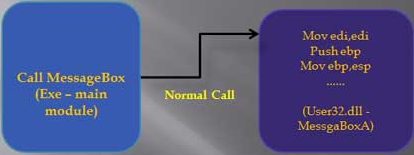

In inline hooking we overwrite the first 5 bytes of the funciton or API to redirect the flow of execution to our code. The 5 bytes can be JMP, PUSH, RET, or CALL.
Normal call:

Hooked call:

MessageBox starting bytes are overwritten by JMP to myHandler. We do our stuff and then transfer the control back to the original function (MessageBox).
To make a DLL we need the following things: - MessageBoxA API address i.e pointer
- Our function or code address i.e pointer
We can get MessageBoxA API address using GetProcAddress:- Get MessageBoxA address
- Get custom code or function address
- Overwrite bytes at #1 with JMP to #2
- Modify the parameter of original call
- Transfer control back to #1